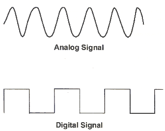
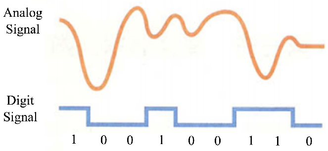

Introduction
Devices we use every day can either be analogue or digital. Analogue devices measure or display continuously changing signals, while digital devices use discrete numbers or signals.
Examples
- Analogue Devices: Clock with hands, thermometer, voltmeter.
- Digital Devices: Digital watch, digital thermometer, calculators.
Analogue vs Digital Signals
 
Watch the Videos
What We Learn
- Understand the difference between analogue and digital devices.
- Identify devices in daily life as analogue or digital.
- Learn how signals are represented differently in analogue and digital devices.
Assessment Questions
- Define analogue and digital devices in your own words.
- Give two examples of analogue devices.
- Give two examples of digital devices.
- How is a digital signal different from an analogue signal?
- Why are digital devices more common in modern technology?